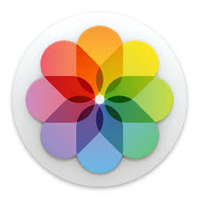
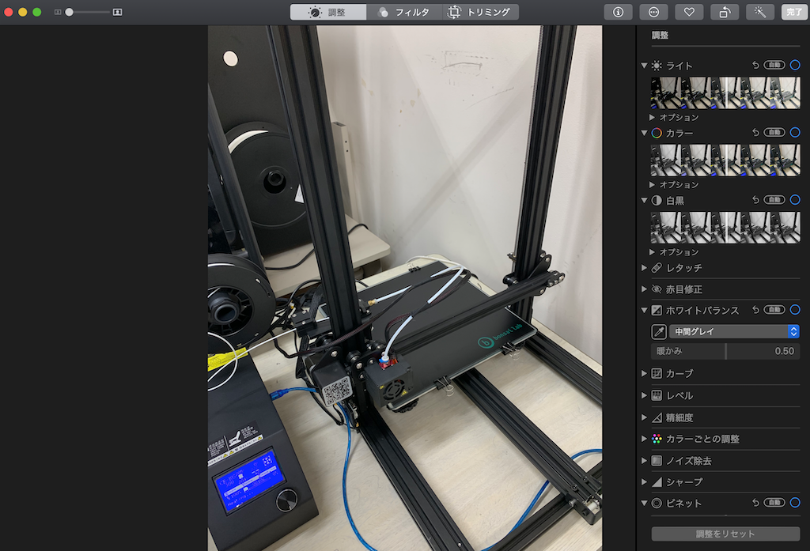
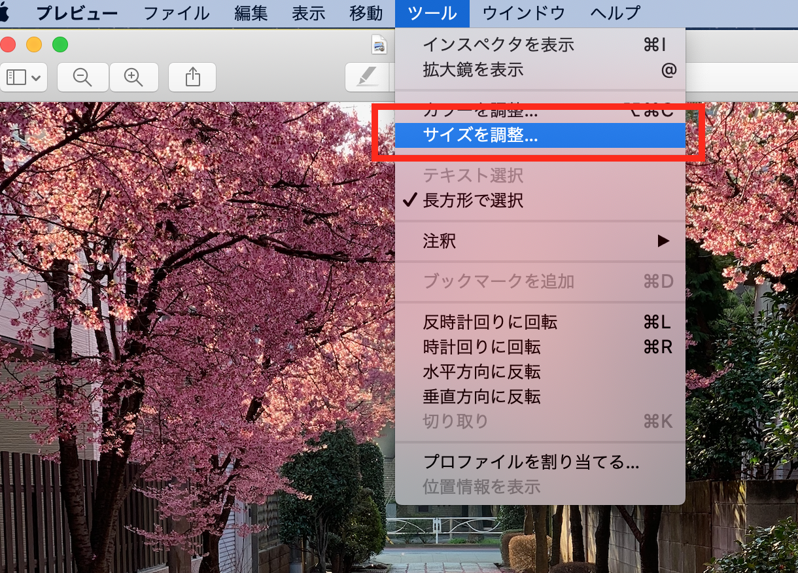
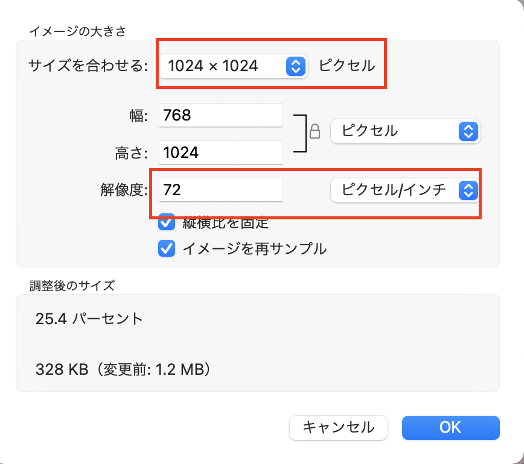
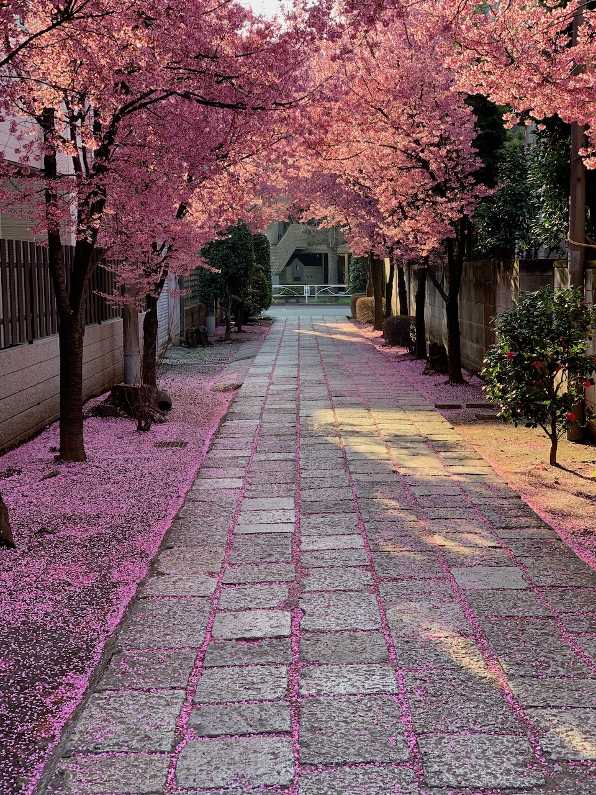

スマートフォンやデジカメで撮影した写真は非常に大きなサイズで保存されています。１枚の写真が数MBにもなりますが、webで表示する場合は高い解像度は必要ないので、画像サイズを小さくして、サーバーの容量を無駄に使わないようにしましょう。

PhotoshopなどのソフトがなくてもMacの写真アプリで簡単な色などの加工やトリミングなどできます。

フォルダに保存されたpng,jpegファイルなどは写真をダブルクリックすればプレビューで開きます。
[ツール]→[サイズ調整]

下記の設定ぐらいでも十分な場合が多いです。

サイズ、解像度変更後の写真。元画像のファイルサイズが6MB程度だったのが、800KBとなりファイルサイズが約1/5になりました。この方が当然、読み込み速度も速くなります。
